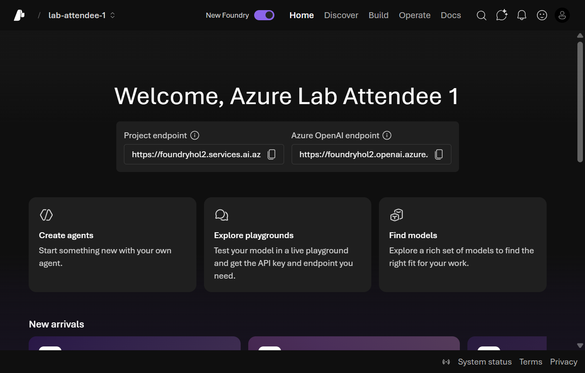

Setup & access verification
This module gets you into the Microsoft Foundry portal and ready to build. Because you are using your own Azure subscription with Foundry access already in place, there is nothing to install — everything here happens in the browser at ai.azure.com.
Tick the checkbox next to each step as you complete it. Your progress is saved in this browser and shown on the workshop overview.
Objectives
- Sign in to the Microsoft Foundry portal and enable the New Foundry experience.
- Select an existing Foundry project, or create a new one in your subscription.
- Deploy a chat model (and an embedding model) that the rest of the workshop uses.
- Confirm you can reach the Build and Operate areas of your project.
Prerequisites
You only need a modern browser and an Azure account that can sign in to Foundry. To create a project or deploy models you need adequate permissions on the target subscription or resource group:
| You want to… | Typical role needed |
|---|---|
| Open the portal and browse | Any access to the subscription |
| Create a Foundry project / resource | Owner or Contributor on the resource group |
| Deploy models | Azure AI Account Owner / Cognitive Services Contributor (or Owner/Contributor) |
If your organization has already provisioned a Foundry project and deployed models for you, you can skip project creation and model deployment — just confirm you can see the project and its models, then continue to Module 02.
Steps
Part 1 — Sign in and enable New Foundry
-
Open the Foundry portal and sign in with your Azure account.
-
Enable the New Foundry toggle in the top navigation bar if it is not already on. Every module in this workshop uses the New Foundry experience.
📸 Screenshot: New Foundry toggle in the top navigation bar
Part 2 — Select or create a project
A project is the workspace that holds your agents, model deployments, tools, knowledge, and evaluations.
-
If you already have a project, select it from the project dropdown and choose Let's go. You should land on the New Foundry project home page.
📸 Screenshot: New Foundry project home page

-
If you do not have a project yet, create one:
- Select ＋ Create (or New project) from the project picker.
- Give it a name such as
acl-remedy-workshop. - Choose (or let the portal create) the underlying Foundry resource, subscription, and resource group.
- Select Create and wait for provisioning to finish, then open the project.
Add your own screenshot: the Create project dialog in your subscription.
One Foundry resource can host many projects, and model deployments belong to the resource, not to the individual project. Every project under the same resource sees the same deployments, so there is no need to redeploy a model each time you create a project.
Part 3 — Deploy the models you'll use
The workshop scenario needs a chat model. A later module (Foundry IQ) also uses an embedding model, so deploy both now while you are here.
-
In the left navigation, open Build → Models (or Discover → Models) and select ＋ Deploy model.
-
Deploy a chat model — for example
gpt-4oorgpt-4.1:- Search for the model, select it, and choose Confirm / Deploy.
- Accept the default deployment name (matching the model name keeps later steps simple).
- Leave the default deployment type unless your organization requires a specific one.
Add your own screenshot: the Deploy model dialog showing your chat model. -
Deploy an embedding model — for example
text-embedding-3-large— using the same Deploy model flow. You will use it to ground the agent in Module 07. -
Confirm both deployments appear under Build → Models with a status of Succeeded.
💡 Best practice — choosing the region, deployment type, and deployment name
Three small decisions in this step quietly shape the rest of the workshop. Microsoft's guidance:
1. Pick the region before you deploy anything. Agent tools — not just models — vary by region, and the region is fixed on the Foundry resource. Web search, MCP, Azure AI Search, and Code Interpreter are broadly available; File search is missing in Italy North and Brazil South, and Computer Use is supported in only a handful of regions. Check the tool-by-region matrix first.
2. Start with Global Standard. It receives new models first, carries the lowest price, and has the broadest region coverage. Move away from it only for a specific reason:
| Requirement | Deployment type |
|---|---|
| Default — newest models, lowest price, broadest regions | Global Standard |
| Keep processing inside the EU, US, or APAC data zone | Data Zone Standard |
| Reserved, predictable throughput | Global Provisioned (PTU) |
| Large asynchronous jobs at roughly half the cost | Global Batch |
Not every model offers every type. If the dropdown shows only Global Standard, that is the model's limitation, not an error.
3. Keep the deployment name identical to the model name. Agents, the SDK, and every later module reference the deployment name, not the model. Matching the two means anything you copy from this workshop works unchanged.
4. Quota is granted per model, per region, in units of 1,000 tokens per minute. Deploying a chat model does not consume your embedding model's allowance — so if a deployment fails on capacity, check the quota for that specific model rather than assuming the subscription is exhausted.
More detail: Deployment types for Foundry Models · Agent Service limits, quotas, and regional support
Model availability and quota vary by region. If a model is greyed out or a deployment fails on quota, pick a supported region for your Foundry resource or request a quota increase for that model family in the Azure portal.
When you pick a model for an agent later on, the dropdown has two groups: Deployments (models already deployed here) and Models (catalog entries that are not deployed yet). Always choose from Deployments. Selecting from Models asks Foundry to create a new deployment, which fails unless you hold model-deployment rights. If the Deployments group looks empty, that is a missing Reader role on the Foundry resource — not a missing model.
Validation
- The New Foundry toggle is on and you can open your project's home page.
- Your project is selectable from the project dropdown.
- Build → Models lists a deployed chat model and an embedding model, both Succeeded.
- You can open the Build and Operate areas without permission errors.
Congratulations 🎉
Your Foundry project is ready. You signed in, enabled New Foundry, confirmed (or created) a project in your own subscription, and deployed the chat and embedding models the rest of the workshop relies on. Everything is in place to start building the acl-remedy-advisor agent.
Next up → Module 02: Foundry portal walkthrough Get oriented across the Home, Discover, Build, and Operate tabs so you know exactly where every model, tool, and setting lives.
Troubleshooting
| Symptom | Likely cause | Fix |
|---|---|---|
| No Create project option | You lack write access on the subscription/resource group. | Ask an Owner/Contributor to create the project, or grant yourself the role. |
| Deploy model button disabled | Missing model-deployment permissions. | Get Azure AI Account Owner / Cognitive Services Contributor (or Owner) on the Foundry resource. |
| Deployment fails on quota | No capacity for that model in the region. | Choose a different region for the Foundry resource, or request a quota increase in the Azure portal. Quota is per model — check the row for that exact model. |
| Only Global Standard offered as a deployment type | That model doesn't support the other types in this region. | Expected. Continue with Global Standard, or pick a different model if you need data-zone residency. |
| Agent model dropdown lists models you never deployed | The Models group is the global catalog, not your deployments. | Pick from the Deployments group at the top. Selecting a catalog model triggers a brand-new deployment. |
| Deployments group is empty, but the project otherwise works | Missing Reader on the Foundry resource — the picker reads the resource, not the project. | Ask an admin for Reader on the Foundry resource. Project-level access alone is not enough. |
| Can't see the endpoint or New Foundry layout | Classic view is active. | Turn the New Foundry toggle on in the top navigation bar. |
| Project home won't load | Transient portal issue or role propagation delay. | Refresh, wait a minute for role assignments to apply, and try again. |